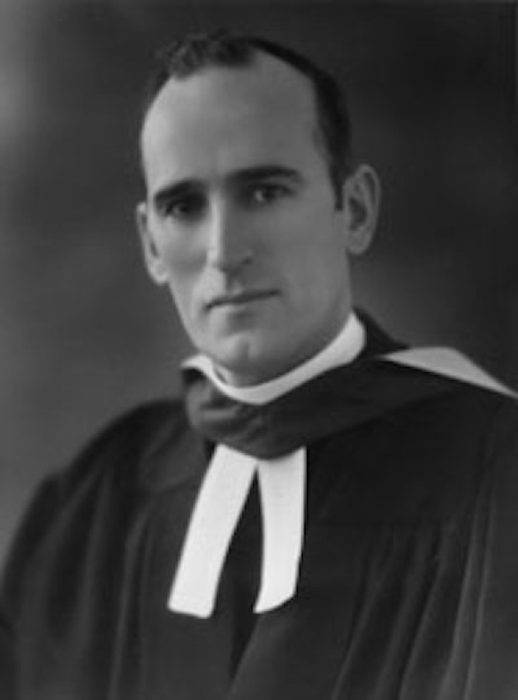

-1-MasterItem.svg)
Stories of Westminster United Church & its People / Page
71
John Sutherland Bonnell
Westminster’s Most Famous Preacher
Part One
“I grew up in Charlottetown and left school in 1908 when I was 15
before completing Grade 8. I was thoroughly bored by the subjects taught
in the public school. The only subject that interested me was public
speaking at which I quite excelled. An education past public school
was not seen as a necessity in those days and my parents realized
that I was not accomplishing much” (Bonnell).
At 17 Bonnell got a job at Falconwood (a psychiatric hospital) where his
father worked as a Supervisor. A man, E.O. Brown, tried for embezzlement,
found insane, and incarcerated in Falconwood became the young Bonnell’s
personal charge whom he had to attend daily during exercise periods etc. They
became friends.
During his time with Brown, Bonnell came to se that the man had a brilliant (not
insane)
mind and was well educated.
When Bonnell decided he wanted to enter the ministry, matriculation from
secondary school was
not a prerequisite to entering college. However, he realized that the college
entrance exams would
require more of him than he had learned in school.When he set about educating
himself he became
aware that Brown might be a valuable tutor for him. As it turned out their
relationship did take the
form of student and tutor rather than minder and inmate. Bonnell asserted that
Brown's subsequent
help enabled the young man to write and successfully pass the entrance exams and
begin his
education at Prince of Wales College.
From Prince of Wales Bonnell went on to study at Dalhousie University and then
took his theological
training at Pine Hill Divinity Hall, Nova Scotia. While at Dalhousie, he
interrupted his studies to enlist
in the Canadian Army in WW I. During his service he was twice wounded and, after
suffering from
gas poisoning, was sent home. (His friend, Brown, whom Bonnell eventually helped
escape from
Falconwood and enlist in the army was killed in action in France.)
Rev. John Sutherland Bonnell
